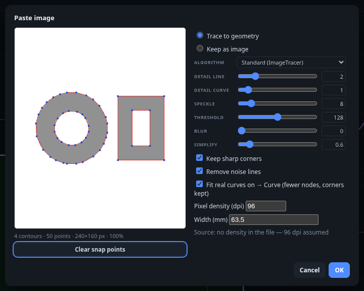

Image Trace — Jejak Gambar
Tempel gambar dari clipboard (Ctrl+V) atau seret berkas gambar ke kanvas. Gambar ditrace secara lokal dan masuk sebagai satu objek dengan tiga titik dan dua garis bantu hijau — sama seperti objek teks.

1. Dialog trace
Dialog trace menampilkan pratinjau langsung dari kontur di sebelah pengaturan, jadi kamu bisa menyesuaikan sambil melihat hasilnya, bukan menekan OK buta. Setiap pengaturan yang mengubah pratinjau punya slider untuk pengaturan kasar dan kotak angka untuk nilai persis (ketik di kotak untuk nilai yang tidak tercapai slider).
| Pengaturan | Keterangan |
|---|---|
| Detail line | Seberapa rapat tepi lurus mengikuti gambar. Semakin rendah = lebih banyak titik; semakin tinggi = lebih sederhana. |
| Detail curve | Seberapa rapat lengkungan mengikuti gambar. Semakin rendah = lebih banyak titik; semakin tinggi = lebih sederhana. |
| Speckle | Gumpalan yang lebih kecil dari nilai ini (dalam piksel sumber) diabaikan sebagai noise. |
| Threshold | Piksel yang lebih gelap dari nilai ini dihitung sebagai bentuk. Semakin tinggi, semakin banyak gambar dipertahankan. |
| Blur | Blur diterapkan sebelum trace. Semakin tinggi, semakin halus piksel noise. |
| Simplify | Sejauh mana titik trace boleh menyimpang dari garis keliling sebelum dihilangkan. Semakin tinggi = lebih sedikit titik. |
| Keep sharp corners | Pertahankan sudut tajam saat trace. |
| Remove noise lines | Hilangkan garis noise kecil. |
| Fit real curves | Pasang kurva asli pada → Curve (lebih sedikit node, sudut dipertahankan). |
| Pixel density (dpi) | Kepadatan piksel sumber. |
| Width (mm) | Lebar objek hasil trace dalam mm. |
Hanya bagian gelap yang di-trace: latar putih tidak ikut, jadi mesin tidak akan mencoba memotong seluruh lembar. Baris di bawah pratinjau menghitung jumlah kontur dan titik yang akan benar-benar dihasilkan impor. Pengaturanmu diingat, jadi gambar berikutnya mulai dari tempat kamu berhenti.
2. Mode
- Trace to geometry — jejakkan gambar menjadi kurva dan garis yang bisa diedit.
- Keep as image — simpan sebagai gambar referensi (bukan geometri potong).
3. Catatan penting
- Hanya teks yang benar-benar merupakan dokumen SVG yang diperlakukan sebagai vektor. Paste teks atau gambar biasa berperilaku seperti sebelumnya.
- Jika editor meninggalkan pratinjau PNG di clipboard di samping markup, vektor yang menang.
- Hasil trace bisa diedit lebih lanjut dengan → Curve, Ctrl+K (fit curve), dan boolean.